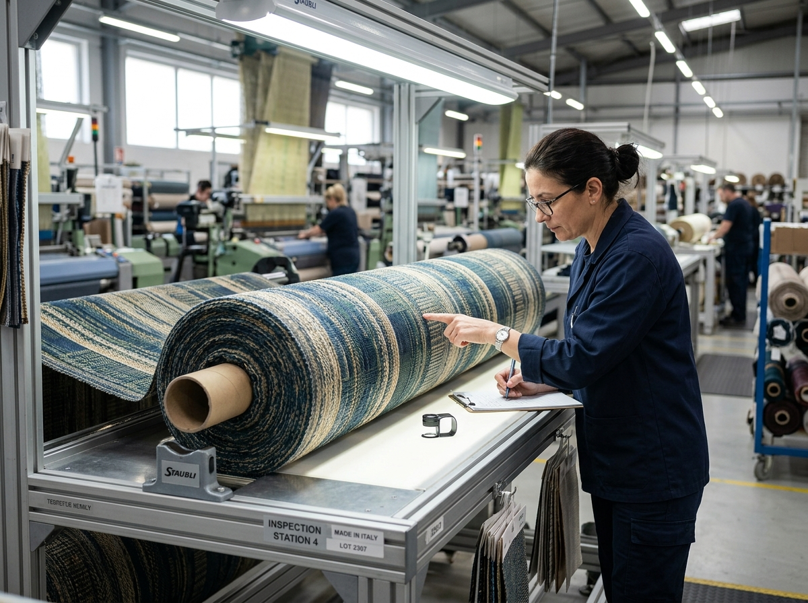

Greige-to-Finished Fabric Processing
We supply solid-dyed, printed, and finished fabrics aligned exactly to your technical specifications.
Comprehensive Processing Capabilities
Our Erode-based facility handles the complete transition from raw greige fabric to finished, export-ready material. We specialize exclusively in woven fabrics for various B2B applications.

Solid-Dyed Fabrics
Achieving consistent, even coloring across large fabric batches requires precise technical control. We offer rigorous solid dyeing processes that match your approved shade cards exactly.
- Strict shade matching and lab-dip approvals
- High color fastness for export standards
- Consistent results across multiple dye lots
Printed Fabrics
Our printing capabilities are geared towards handling complex patterns and multi-color designs with excellent registration and clarity.
- Sharp design registration and clarity
- Variety of printing techniques supported
- Durable prints that withstand industrial washing


Finished-Fabric Processing
The final touch determines the fabric's usability. We apply specialized finishing treatments to achieve the required hand feel, dimensional stability, and specific performance characteristics.
- Controlled shrinkage and dimensional stability
- Customized hand-feel and texture modification
- Defect-checking and secure packing
Technical Service Standard
| Fabric Suitability | 100% Cotton woven fabrics, blends, and specialized home textile constructions. |
|---|---|
| GSM Range | Typically handling standard export weights (specific GSM requirements assessed upon enquiry). |
| Output Quality | Export-grade fastness, verified shade matching, and controlled shrinkage parameters. |
| Minimum Order Quantity | Evaluated per requirement to ensure economic viability and technical feasibility. |
Discuss Your Requirement
Submit your fabric specifications for a detailed technical assessment and processing quotation.
Request a Quote